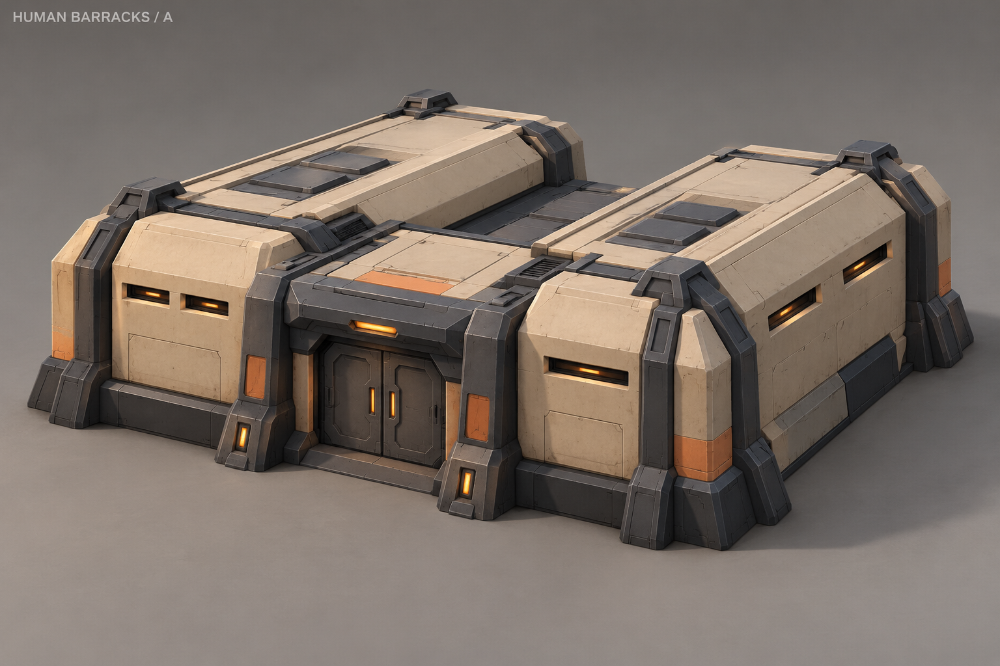
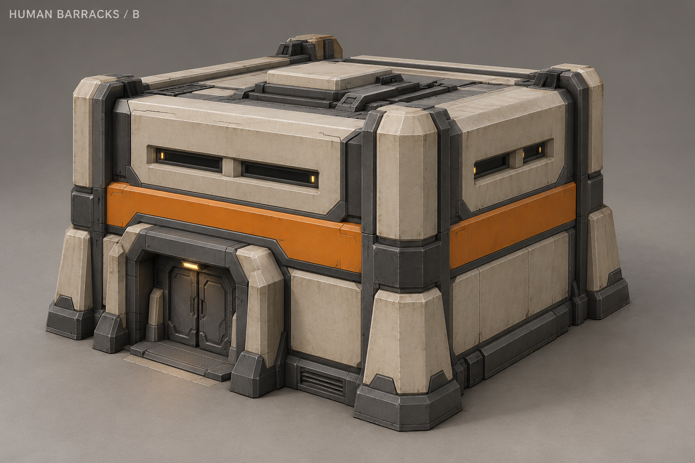
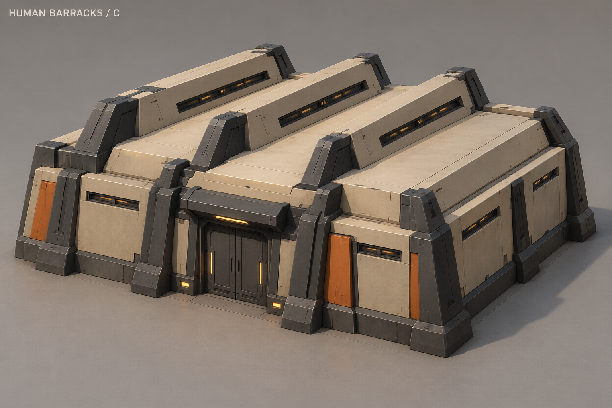
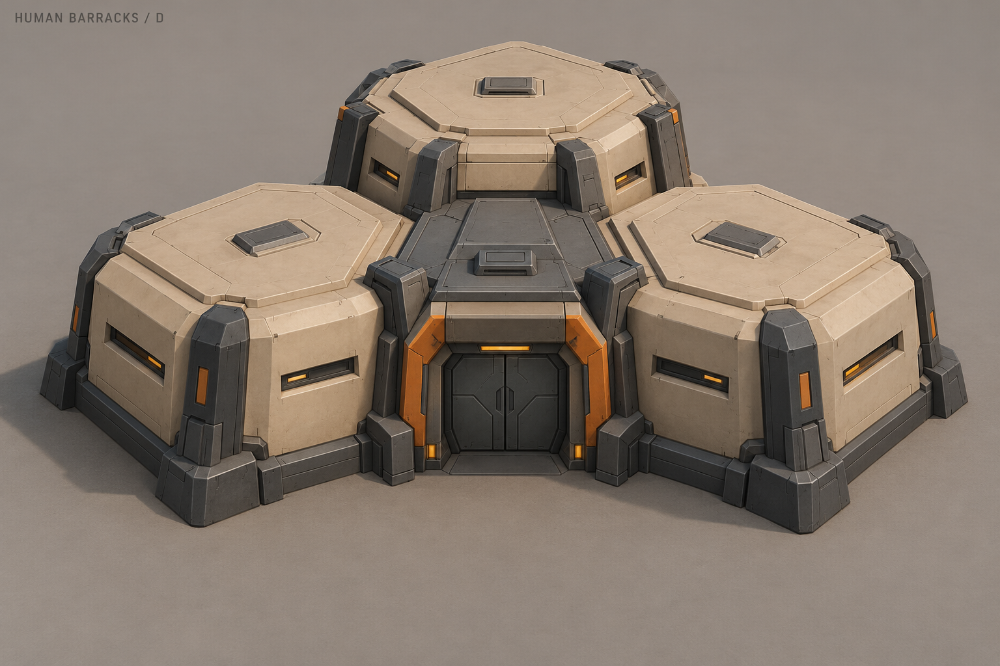
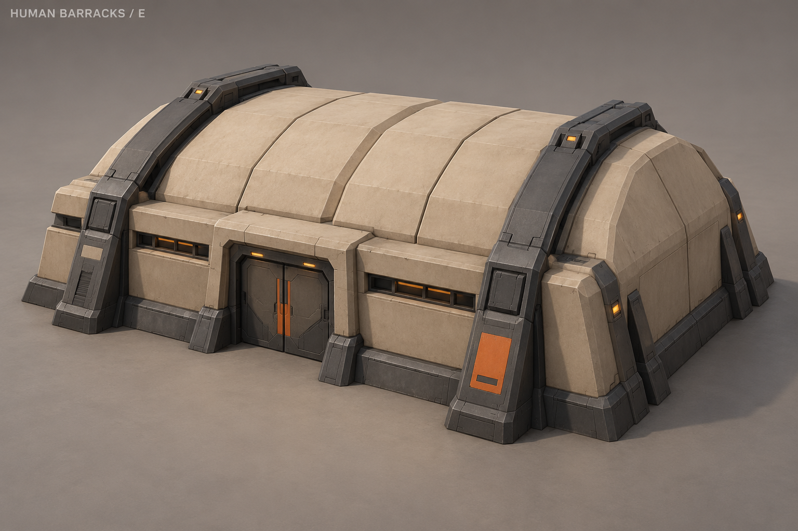
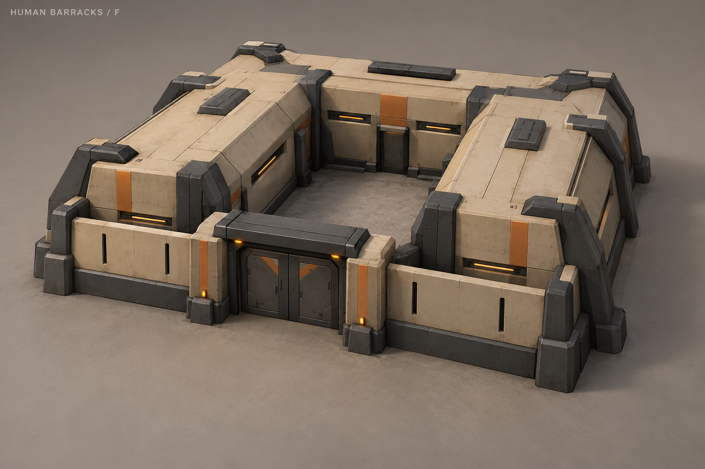
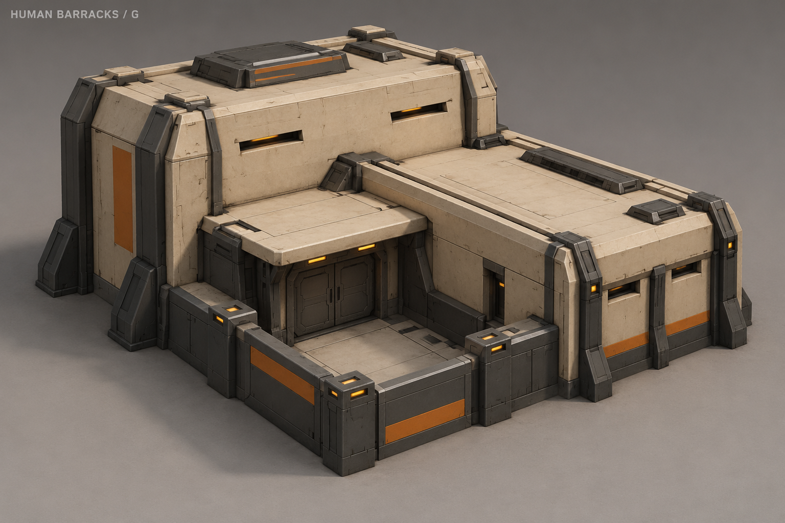
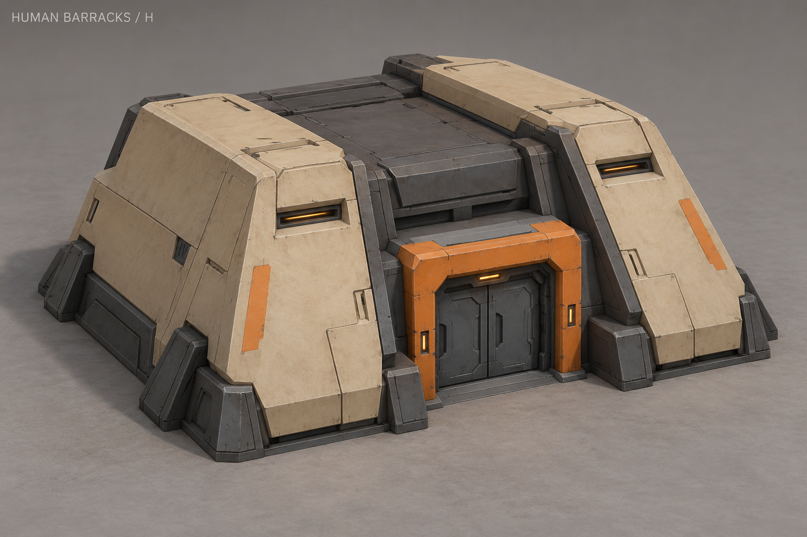

A «Два крыла»
Два низких жилых крыла и центральный защищённый вход.

B «Гарнизон»
Двухэтажный гарнизон с компактным квадратным корпусом.

C «Шед»
Три складки крыши с узкими верхними окнами.

D «Три модуля»
Три соединённых жилых модуля с общим входом.

E «Свод»
Широкий сводчатый корпус с силовыми рёбрами.

F «Внутренний двор»
Казарма вокруг небольшого внутреннего двора.

G «Галерея»
Асимметричные корпуса и вход под навесом.

H «Пластины»
Две крупные боковые бронеплиты и утопленный вход.